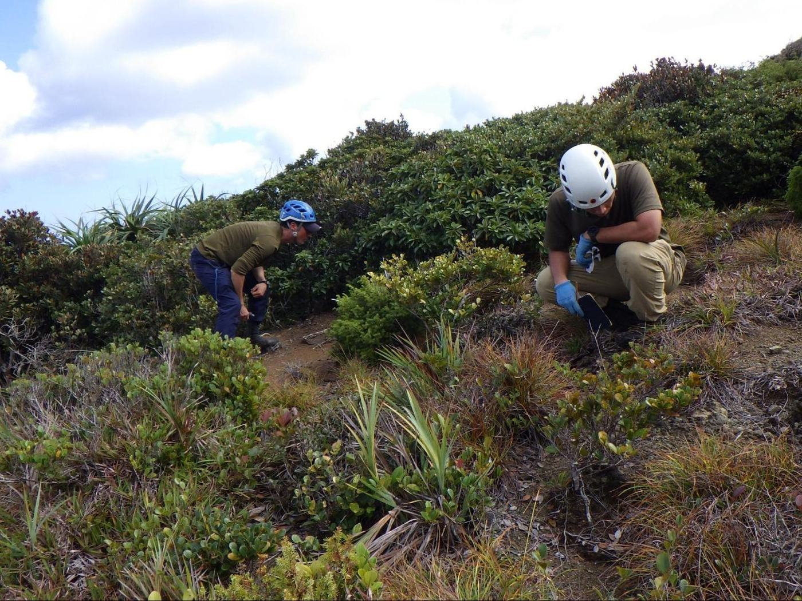
巣穴確認による生息数記録
毎年、成虫の活動期を終えた冬に、生息地において幼虫の巣穴数を記録しています。

小笠原諸島には5種類の固有トンボが生息していますが、その中でも「オガサワラトンボ」と「オガサワラアオイトトンボ」、「ハナダカトンボ」の3種類は特に個体数が少なく、環境省の保護増殖事業の対象種となっており、さまざまな保全活動が進められています。
小笠原固有トンボ類が生息する「兄島」と「弟島」という無人島で、毎年決まった沢を上流から下流までくまなく踏査し、5種類の固有トンボの目撃数を記録しており、その変動を比較検証できるようにしています。（2014－環境省委託事業として受託）
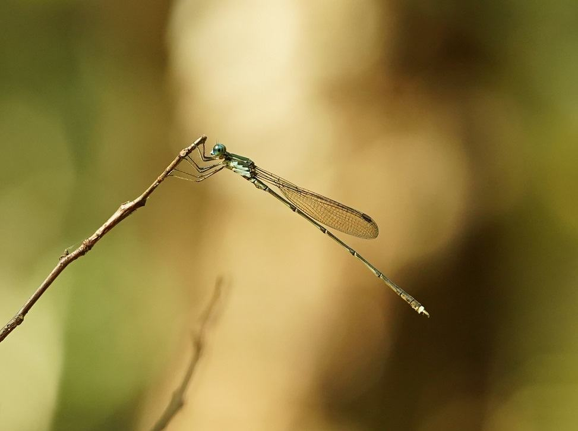
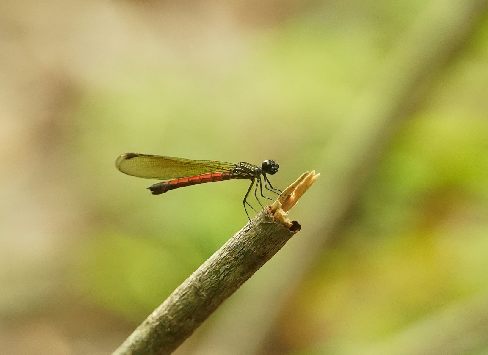
渇水期のトンボの産卵地確保を目的として、兄島、弟島、西島に、合計約100基の人工トンボ池（大型のプラスチック桶）を設置しています。毎年すべての人工池を周り、プラスチックの劣化具合や割れのチェック、不具合のあった桶の回収・交換、水質悪化を防ぐための枯れ葉除去、トンボの幼虫であるヤゴの利用確認などを行っています。
毎年、止水性の「オガサワラトンボ」や「オガサワラアオイトトンボ」のヤゴが確認できており、その有用性が実証されています。
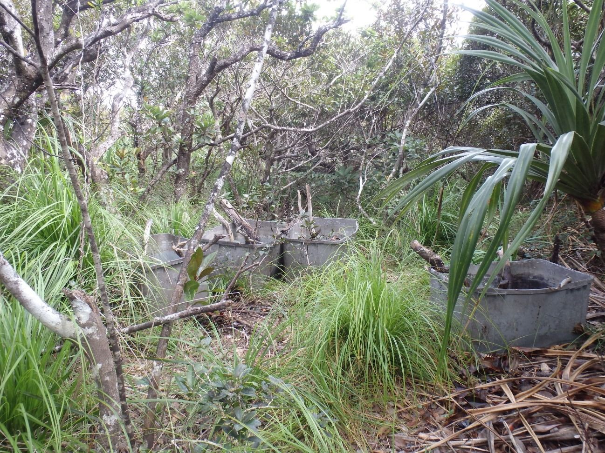
外来植物の「シュロガヤツリ」が繁茂すると沢の水面を覆いつくしてしまい、トンボの産卵に悪影響を与えているといわれています。そこで、弟島内で特に広範囲にシュロガヤツリが繁茂する沢において、トンボの産卵環境を改善するため、産卵期前に沢周囲のシュロガヤツリの刈込作業を行っています。
手作業の刈込では数カ月で元に戻ってしまいますが、生態系にどのような影響を与えるかわからないので、農薬等を容易に使用することはできません。根本的な解決方法が見つかっておらず、試行錯誤しながら活動しています。
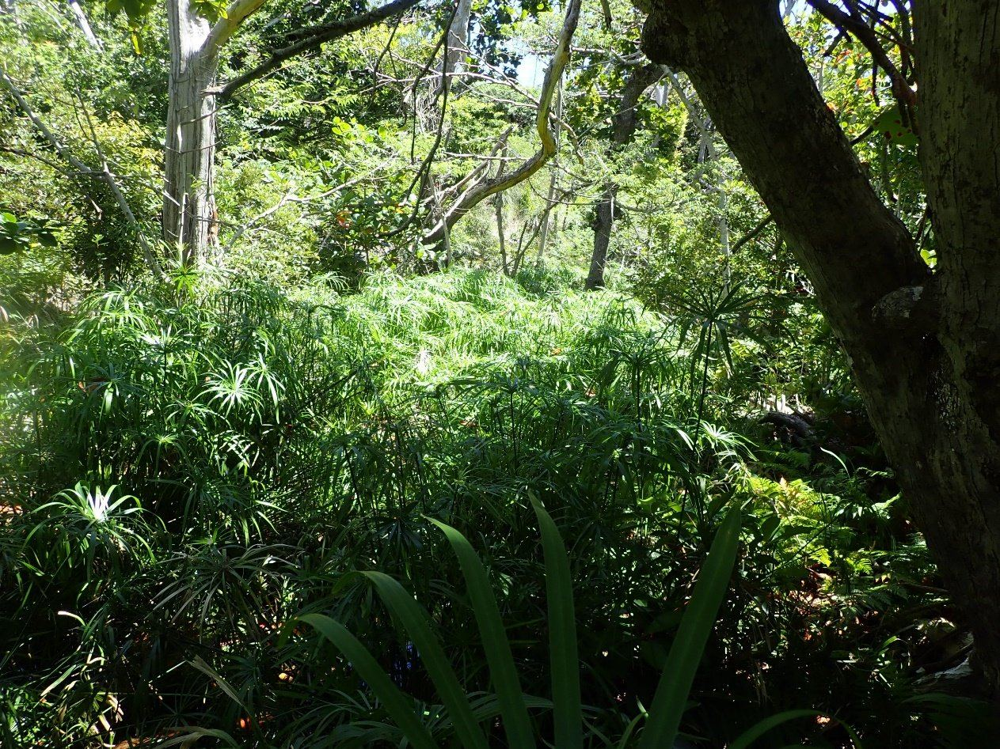
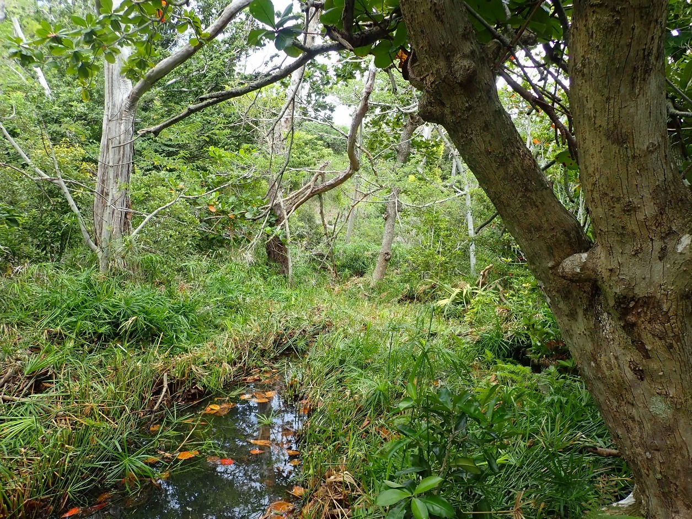
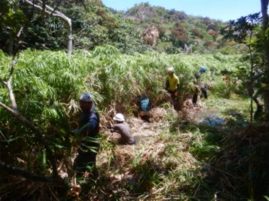
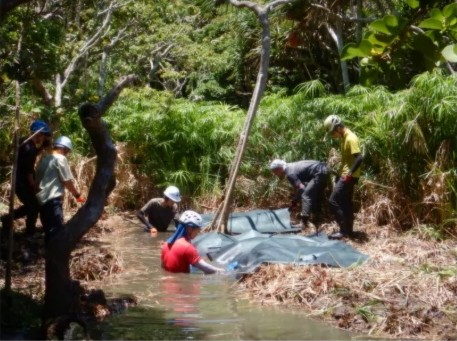
※この活動の一部はGGG（公益社団法人 ゴルフ緑化促進会）様の国立・国定公園支援事業（令和2〜4、令和7年度）と、公益財団法人 公益推進協会様の自然公園等保護基金（令和5年度）を活用させていただいております。
小笠原諸島の無人島である兄島にのみ生息するオガサワラハンミョウの数は減少傾向にありますが、その原因は明確になっていません。BOISSでは2015年から環境省と協力して生息数調査を行っており、本種が減少していく様子を目の当たりにして悔しい思いを経験しています。
これまで、本種の生息地が本土から遠く離れた離島の無人島という特殊な生息環境であるため、研究を深めることが難しく、その知見不足が長年の課題となっていました。兄島での生息数減少に歯止めが利かない中、BOISS主体で、研究者の協力を得つつ、兄島での生態調査活動を2023年度から開始しました。絶滅危惧種の中でも特に絶滅リスクの高い種なので、関係行政機関やその他関係者などと情報共有を丁寧に行いながら慎重に活動を行っています。未だ調査の途中ではありますが、野生下において幼虫が何を食べているのかを解明するなど、一定の成果を上げており、この成果が新たな保全策の立案に役立てられています。
その他にも、環境省では、父島の世界遺産センター内で人工繁殖させた個体を兄島に移植する取り組みも進めています。私たちは、過去生息の記録があるが、いなくなってしまった場所などをそれらの移植候補地として活用するために、繁茂した外来植物の駆除や、雨水などで流失した環境を再生する生息環境改善活動も進めています。
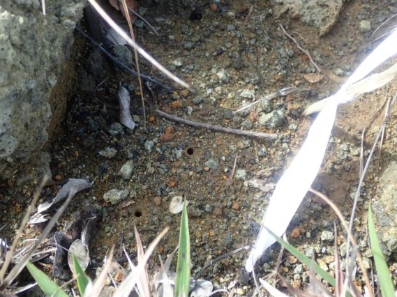

毎年、成虫の活動期を終えた冬に、生息地において幼虫の巣穴数を記録しています。
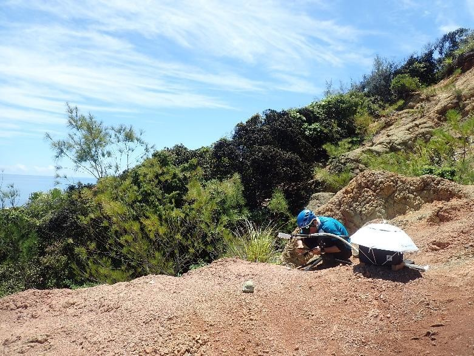
無人島でも最大10日間ほど連続で撮影できる長時間カメラを用いて、主に幼虫の撮影を行い、どのような生態をしているのか調査を行っています。
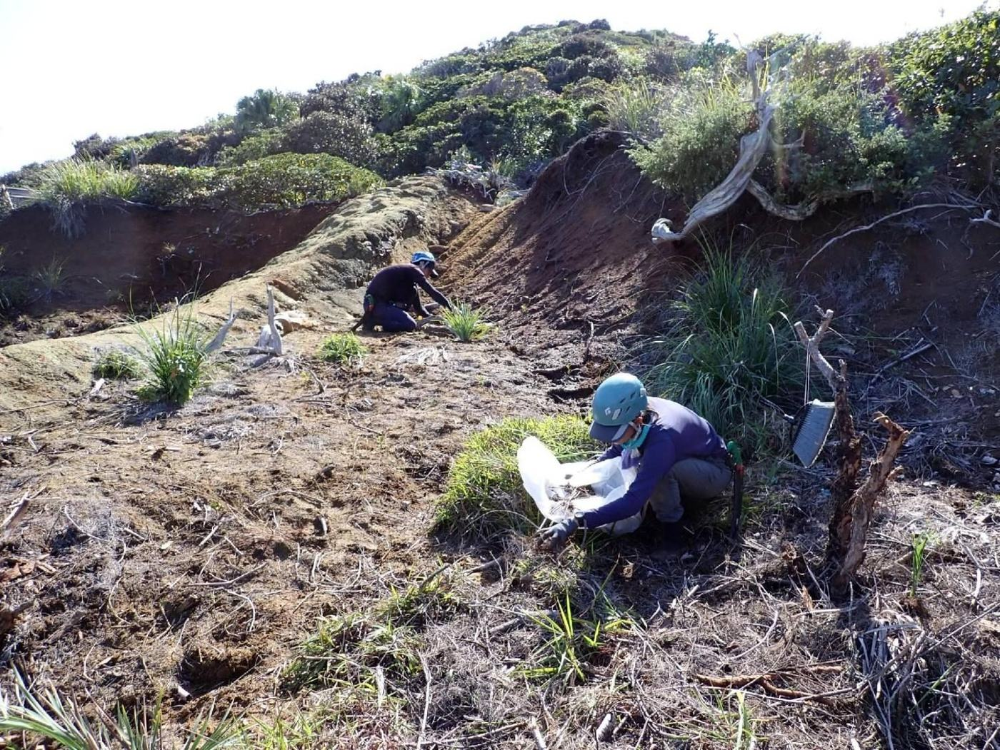
荒廃した環境を、オガサワラハンミョウが生息できる環境に整備しています。
※この活動の一部は、環境省生物多様性保全推進交付金（令和7～9年）、公益財団法人 自然保護助成基金様の第34期プロ・ナトゥーラ・ファンド助成（令和5年度）を活用させていただいております。
小笠原には9種類の固有ハナバチ類が生息しています。小笠原で独特の進化をした固有植物たちの受粉には、固有昆虫の存在が大きく関係していると言われており、固有ハナバチ類もその一翼を担っています。セイヨウミツバチのような集団で生息する種ではなく単独で生活しており、集めた花粉をハチミツに変化させて貯蔵する性質もないため、人との関わりは薄いですが在来の植物たちにとっては大切なパートナーであり、小笠原の生態系にとっては非常に重要な存在です。
当会では、父島においてわずかに残るハナバチ類の生息環境を保全する取組みを行っています。ハナバチ類の飛来が確認できるハマゴウという在来植物周りの外来植物を駆除し、その林縁に粘着性のトラップを設置し、捕獲することで、グリーンアノールを低密度化させようと活動しています。
さらに、外来植物を駆除した後には、ハナバチ類が好む在来の植物を再生させる取組みも進めています。
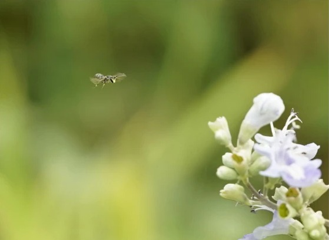
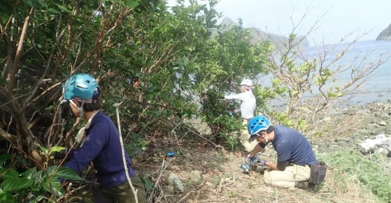
※この活動の一部は独立行政法人環境再生保全機構様の地球環境基金（令和5～7年）によって行われています。
ヒメカタゾウムシ類は飛翔能力を退化させたことから、翅はあるのに飛べない昆虫です。そのため行動範囲が比較的狭く、列島や島ごと、同じ島でも樹上や地上に別の種が分布し、現在小笠原諸島において13種6亜種（Morimoto, 2015）に分類されていることが分かっています。特に樹上性のオガサワラヒメカタゾウムシ類は、外来爬虫類であるグリーンアノールの食害を受けやすい昆虫のひとつで、父島や母島ではすでにその影響で壊滅的な被害を受けており、絶滅が危ぶまれています。
近年少しずつ研究が進んでいるものの生態的に不明な部分が多くその認知度も低いため、人知れず絶滅に向かっている昆虫でもあります。中でも「チチジマヒメカタゾウムシ」はグリーンアノールが蔓延し、固有昆虫のほとんどが絶滅してしまった父島において、じつはまだ守れるかもしれない昆虫のひとつなのです。
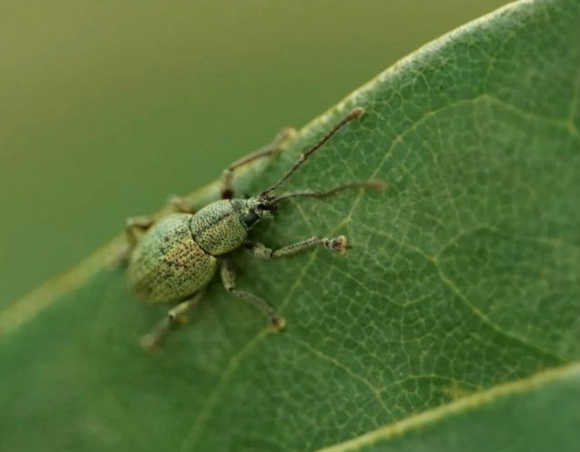
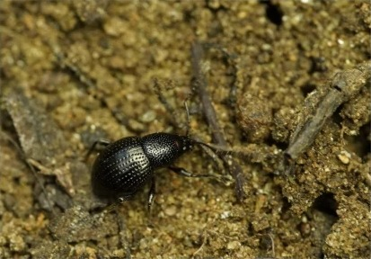
| 種群仮称 | 標準和名 | 学名 | 分布（島） |
|---|---|---|---|
| ミナミイオウヒメカタゾウムシ | ミナミイオウヒメカタゾウムシ | Satozo minamiiwoensis | 南硫黄島 |
| オガサワラヒメカタゾウムシ （ツチヒメカタゾウムシ類） | ハハジマツチヒメカタゾウムシ | Ogasawarazo (Ogasawarazodes) nomurai | 母島 |
| チチジマツチヒメカタゾウムシ | Ogasawarazo (Ogasawarazodes) kishimotoi kishimotoi | 父島 | |
| オトウトジマツチヒメカタゾウムシ | Ogasawarazo (Ogasawarazodes) kishimotoi otohtojimanus | 弟島 | |
| オガサワラヒメカタゾウムシ （オガサワラヒメカタゾウムシ類） | ムコウジマヒメカタゾウムシ | Ogasawarazo (Ogasawarazo) makiharai | 向島 |
| ムコジマヒメカタゾウムシ | Ogasawarazo (Ogasawarazo) matsumotoi | 聟島 | |
| アネジマヒメカタゾウムシ | Ogasawarazo (Ogasawarazo) anejimaensis | 姉島 | |
| ハハジマヒメカタゾウムシ | Ogasawarazo (Ogasawarazo) mater mater | 母島 | |
| ハイイロハハジマヒメカタゾウムシ | Ogasawarazo (Ogasawarazo) mater griseus | 母島 | |
| キアシハハジマヒメカタゾウムシ | Ogasawarazo (Ogasawarazo) mater rufipes | 母島 | |
| クロアシメダカヒメカタゾウムシ | Ogasawarazo (Ogasawarazo) hahajimaensis hahajimaensis | 母島 | |
| キアシメダカヒメカタゾウムシ | Ogasawarazo (Ogasawarazo) hahajimaensis sekimonensis | 母島 | |
| チチジマヒメカタゾウムシ | Ogasawarazo (Ogasawarazo) rugosicephalus rugosicephalus | 父島、兄島 | |
| オトウトジマヒメカタゾウムシ | Ogasawarazo (Ogasawarazo) rugosicephalus otohtojimaensis | 弟島 | |
| チンペイヤマヒメカタゾウムシ | Ogasawarazo (Ogasawarazo) rugosicephalus chinpeiyamaensis | 母島 | |
| スジヒメカタゾウムシ類 | アニジマハダカスジヒメカタゾウムシ | Torishimazo kawashitai | 兄島 |
| ミナミイオウスジヒメカタゾウムシ | Torishimazo minamiiwoensis | 南硫黄島 | |
| キタイオウスジヒメカタゾウムシ | Torishimazo karubei | 北硫黄島 | |
| ダイトウスジヒメカタゾウムシ | Torishimazo daitoensis | 南北大東島 | |
| トリシマスジヒメカタゾウムシ | Torishimazo watanabei | 鳥島 | |
| スジヒメカタゾウムシ | Torishimazo lineatus | 父島、聟島、西島、母島、南島、向島 |
← 表は横にスクロールできます →
チチジマヒメカタゾウムシは、かつては父島全域に生息していましたが、現在は山域の極めて限られた地域にのみ残存しています。
本種は幼虫の間は地中で過ごし、5月から8月の間に成虫として地上で活動しますが、利用する食樹が限定されており、活動範囲も小さいです。昼夜を問わず活動することが分かっており、そのことが絶滅を免れている要因だと考えられていますが、専門家の調査によると父島での確認数は年々減少していることが分かっています。
当会では、父島で激減している本種を保全する取組みとして、本種が確認された樹木に対し、グリーンアノールの侵入を防ぐためにその食樹ごと保護ネットで覆う試みを行い、その有用性を検証しています。
有人島の身近な場所に、まだ保全できる固有昆虫が生息していることは意外と島民の方々に知られていない現状があり、この活動を少しずつ広めていきたいと考えています。
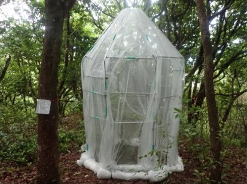
※この活動の一部はTOYO TIREグループ環境保護基金（令和5～7年度）、一般社団法人abt（アクト・ビヨンド・トラスト）様からの助成金（令和5年度）を活用しています。
Morimoto K (2015) Tribe Celeuthetini. Pp. 13–15, 203–251 & 614–625. In Morimoto K, Nakamura T & Kannô K (2015) The Insects of Japan, 4. Curculionidae: Entiminae (Part 2) (Coleoptera). Touka Shobo, 758p.